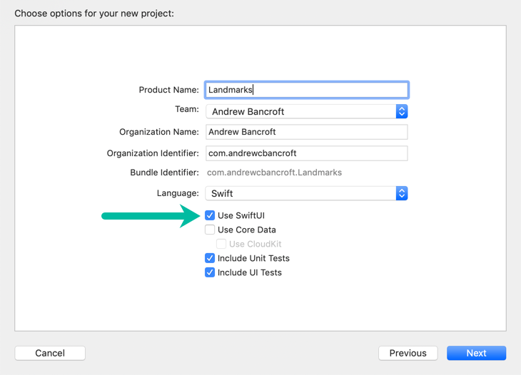

Taking First Steps With SwiftUI
Enabling SwiftUI
Opting in to using SwiftUI is as easy as creating a new project with Xcode 11 and clicking the “Use SwiftUI” checkbox.

Starting Point
Xcode will give you two structs to start with:
- One that describes the
View’s content and layout - One that declares a preview for that
View
Seeing What You’re Doing
Xcode gives you a canvas so that you can visually see what your SwiftUI code is doing.
Open it by clicking Editor > Editor and Canvas
Syncing Changes Between SwiftUI Code and Xcode’s Canvas
Changing and saving your SwiftUI view code automatically updates the canvas preview.
Changing the view using Xcode’s view inspector automatically updates your SwiftUI code!
I love this quote:
Your code is always the source of truth for the view. When you use the inspector to change or remove a modifier, Xcode updates your code immediately to match.
Source: https://developer.apple.com/tutorials/swiftui/creating-and-combining-views
comments powered by Disqus